I am a frequent user of Twitter, a platform that I generally characterize as the perfect place to share thoughts that are too good to let slip by, but not good enough to actively tell my friends. Because my tweets are just transient thoughts, they vary in the extent to which they represent my current views after time has passed. Thus, I like to periodically clear the slate, and delete all my tweets and likes. For that purpose, I wrote Archive-Tweets, a toolkit for downloading and deleting tweets.
A few weeks ago, in March 2018, I was clearing out my tweets. I had about 6,500 liked tweets to download and un-like. In theory, calls to Twitter's GetFavorites API support 75 queries of 200 tweets every fifteen minutes, so I could retrieve about 60,000 tweets per hour. And yet, when I ran my script, it archived and deleted about 3,200 tweets, and then told me there were no more to handle.
I was puzzled. I went on my Twitter profile in the browser, and found that there were 3,255 tweets that had not been retrieved.
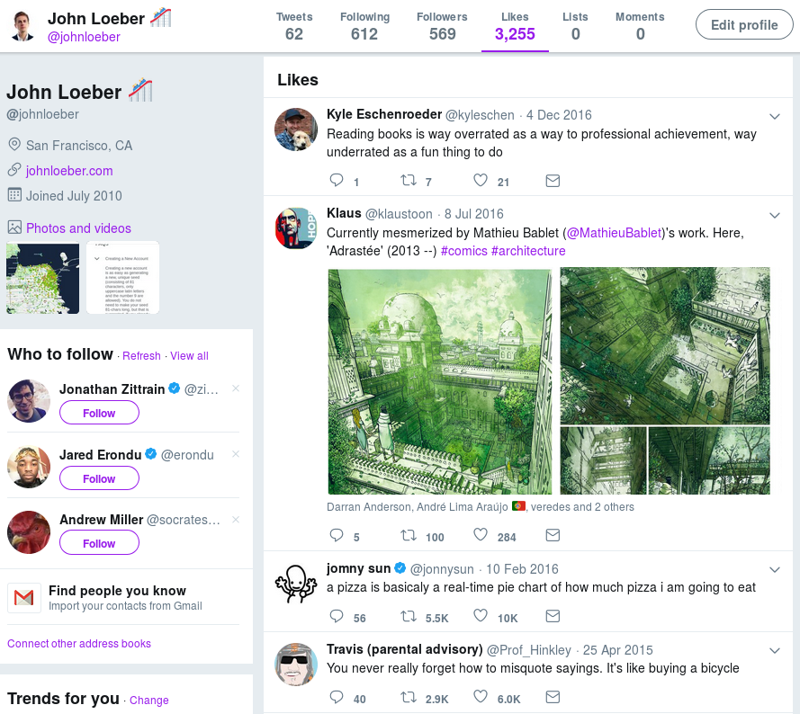I liked another tweet, and tried running my script again. It picked up the new tweet and handled it, but couldn't retrieve any favorites after that.
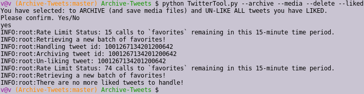I assumed that I had hit some kind of hidden rate limit, so I decided to check again in a few hours. At that point, I ran my script again, but to no avail. It could delete tweets that I had liked in the interim, but the old 3,255 liked tweets, which were so clearly visible on my timeline, seemed totally irretrievable by API.
Of course there existed no documentation on this issue. However, digging through the Twitter Developer Community, I found that the GetStatuses API only lets you retrieve the most recent 3,200 statuses of a user, and that the list of liked tweets is another "timeline" that is likely subject to the same constraints. Considering that my script had managed to un-like the first 3,200 and after that couldn't find any more, this seemed plausible. I double-checked with a friend who used to work at Twitter, who confirmed that 3,200 is the set limit for many timelines, and that the tweets that I see remaining on my profile are served from some different data store that is not accessible to GetFavorites. He advised that I check back in a week to see if that data store gets repopulated with my remaining tweets — I did, but to no avail.
So, with those 3,255 tweets permanently inaccessible through the API, I needed a different solution. I realized I could browser-scrape all the tweets on my page, and get their IDs so I could un-like them. I tried retrieving a tweet by its ID, and then un-liking it directly:

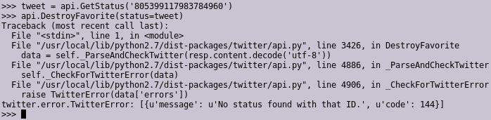
So that didn't work. But bizarrely enough, it seemed I could call CreateFavorite to like a tweet that I had already liked:
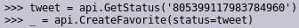And this corresponded to an interface change: suddenly the like-icon for that tweet was filled in, whereas for other tweets on that timeline, they were not.

It appeared that the list of tweets to display on my likes timeline was served from some part of Twitter's system that was totally disconnected from the API, and that the logic of whether or not to display a filled-in heart, denoting a liked tweet, was dependent on the API. Go figure.
However, now I could make calls to DestroyFavorite to unlike that tweet, and that would finally remove the tweet from my timeline. We're down from 3,255 to 3,254.
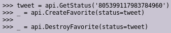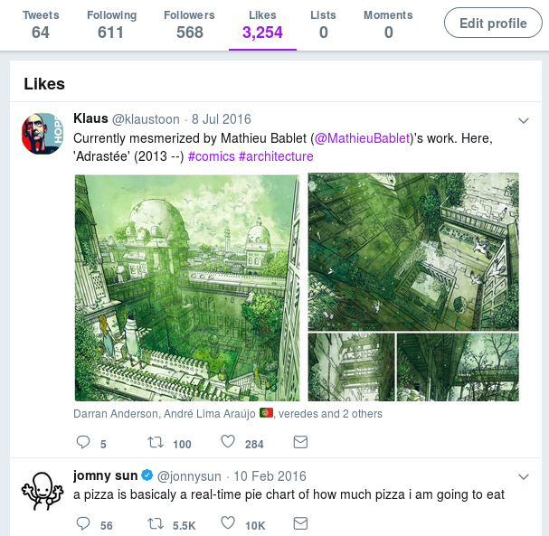
In summary: calls to DestroyFavorite would only work on tweets that were in the data store (of at most 3200 tweets) accessible to the API, and that liking a tweet would put it into that data store, even if it were already in the API-inaccessible data store of liked tweets. In turn, if a tweet was in the API-accessible data store, modifying that tweet would modify it in the API-inaccessible data store. From the point of view of engineering massively scalable systems, this makes sense as a design decision, except that it would be nice to repopulate the API-accessible data store with tweets from the API-inaccessible data store when the former is empty and the latter is not.
Having figured all that out, I then went down my infinite-scroll likes timeline, and used browser tools to extract the ids: every tweet was of class js-stream-item and had a data-item-id attribute.
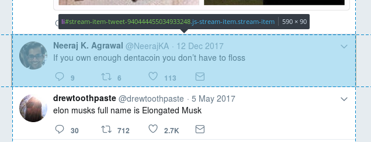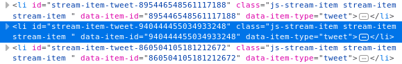
So, as I loaded the page, I only needed to grab all those IDs...
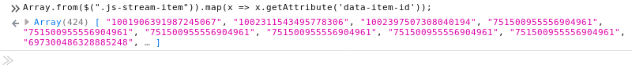...and feed them to my Python script.
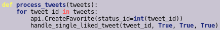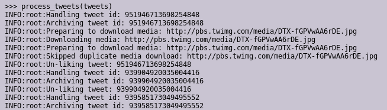
Goal accomplished!
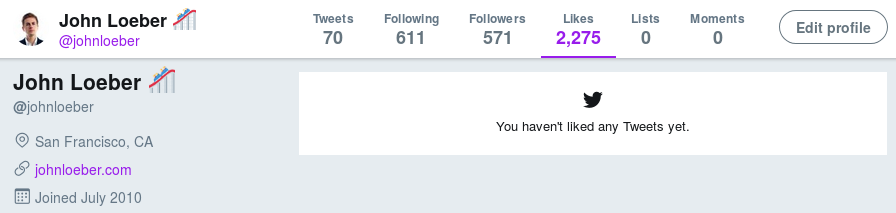The number of liked tweets at this point is, of course, wrong. Again, this is unsurprising in terms of building scalable systems: there's no way Twitter performs a database count every time your profile is loaded; that number is likely stored elsewhere and updated (on entirely mysterious conditions). Twitter has a remarkably unhelpful help page which confirms that this is an issue, but offers no explanation.
Finally, there were some casualties in the course of this adventure. Because my approach involved re-liking and then un-liking thousands of tweets, some of the folks I follow more closely got a lot of notifications.
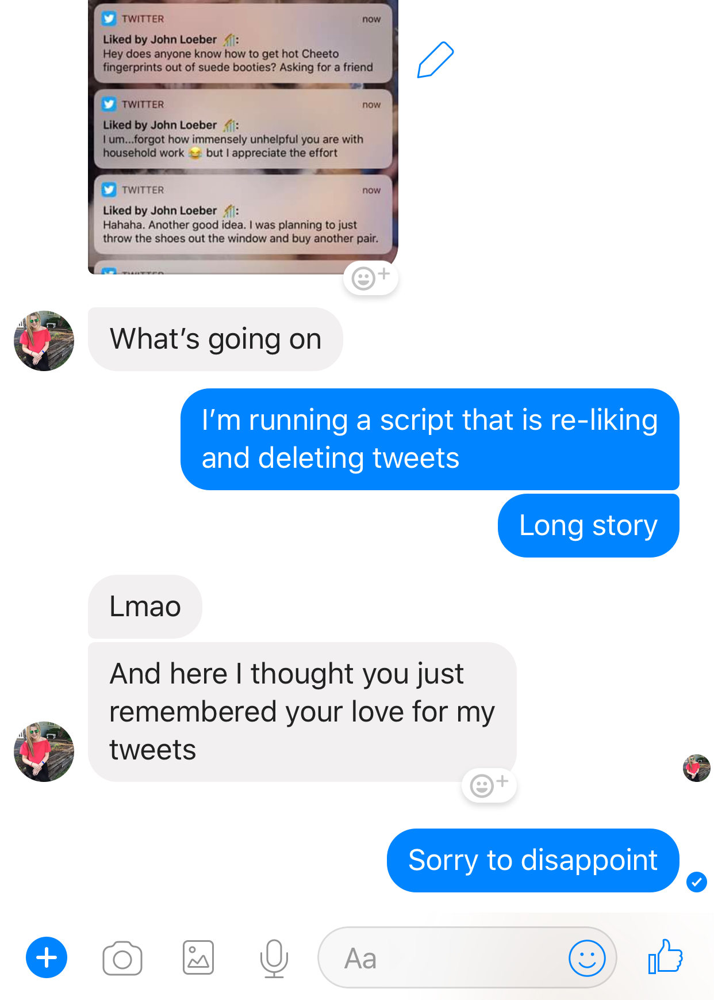I had to answer some questions.
This work is licensed under a Creative Commons Attribution-NonCommercial-ShareAlike 4.0 International License.